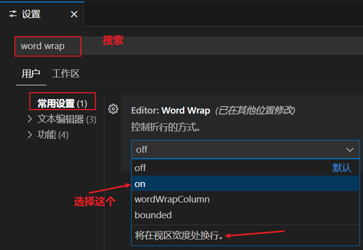
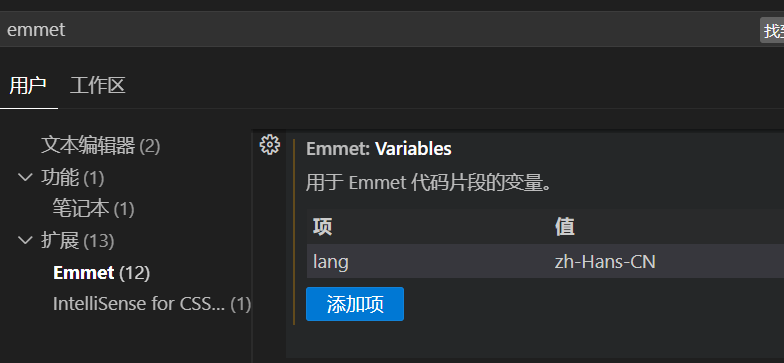

这里整理收集一些
官网地址：Visual Studio Code - Code Editing. Redefined


这里整理介绍一下常用的插件……插件官网：Extensions for Visual Studio family of products | Visual Studio Marketplace
格式化代码必备插件。官网地址：Prettier · Opinionated Code Formatter、在线预览效果：Prettier Online 。其实
下面是我们的配置项：
{
"arrowParens":"always",
"bracketSameLine":true,
"bracketSpacing":true,
"embeddedLanguageFormatting":"auto",
"endOfLine":"lf",
"htmlWhitespaceSensitivity":"css",
"jsxSingleQuote":false,
"printWidth":1024,
"proseWrap":"preserve",
"quoteProps":"consistent",
"requirePragma":false,
"semi":true,
"singleAttributePerLine":false,
"singleQuote": false,
"tabWidth": 4,
"trailingComma": "none",
"useTabs":false,
"vueIndentScriptAndStyle":true
}
你可以将上面的配置项放到一个JSON文件中，并添加到